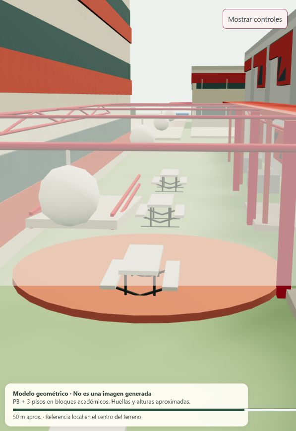
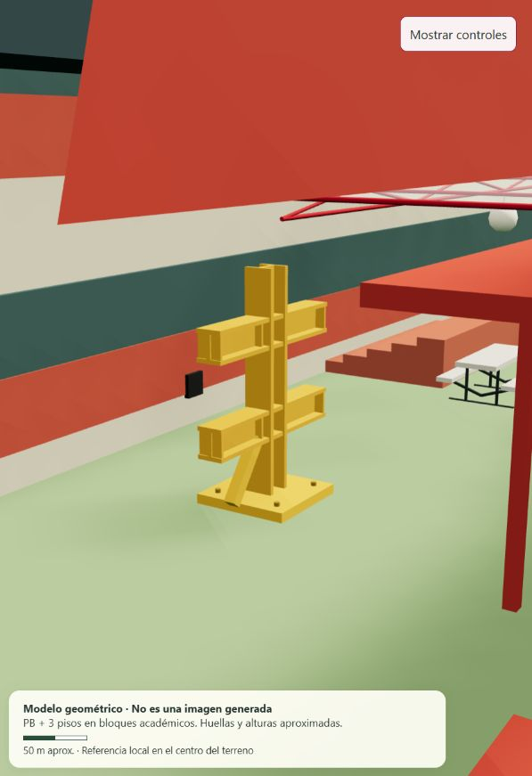
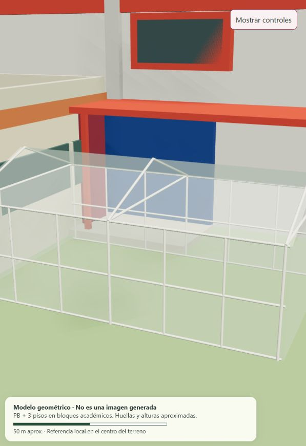

Revisión para Gabriel · 17 de noviembre de 2026
UAM Azcapotzalco
Las fotografías de ambos corpus ahora se reflejan en más partes del modelo: cubierta y mesas del patio de P4, conexiones de acero amarillas, invernadero de P2 y mobiliario de las plazas. Se conserva la base de Gemini junto con las correcciones de estacionamientos, entradas y acabados de W y P1.
Envío al mismo PR #23 autorizado para revisión. La próxima actualización de Google Play todavía no se prepara; el entrenamiento y la versión 0.5.0 se conservan.
100 %
Revisión actual · Mismo encuadre y ubicación que la base de Gemini. Usa + para acercar y desplázate por el plano.
Estacionamientos despejados
Los cajones, topes, camellones y carriles respetan edificios, esculturas y pasos peatonales. Las líneas conservan el grosor necesario para verse en el plano. No se asignan automáticamente plazas reservadas sin confirmar su ubicación.
Entradas coherentes con las rutas
Se abren las interrupciones necesarias en los antepechos de planta baja, el volumen bajo de W y el parasol inferior de T. Se conserva íntegra la pilastra de G, retraída respecto de la aproximación existente.
Acabados del corpus
W incorpora juntas de sus paneles de concreto, recortadas alrededor de las ventanas. En P1 se completa la retícula vertical del revestimiento cerámico azul. Las demás mejoras de Gemini se conservan.
Patio de estudio de P4
La losa opaca da paso a una cubierta traslúcida con bordes curvos, tubos rojos y cerchas. Las mesas macizas se reconstruyen con tablero, bancos y bastidor abierto, conservando sus ubicaciones.
Fotos 0016, 0021 y 0032 · evidencia y cambios
Invernadero de P2
Se distinguen los cerramientos traslúcidos, el techo a dos aguas y los bastidores blancos abiertos. La reconstrucción conserva la forma del recinto; su ubicación esquemática se corrige junto a P2 para separarlo de O y de las rampas.
Fotos 0036 y 0047 · evidencia y cambios
Conexiones amarillas de P4
El exhibidor incorpora perfiles I abiertos, placas de unión, rigidizadores y pernos. Se mantienen la base y la diagonal, sin atribuirle un título artístico o autor no confirmado.
Foto 0019 · evidencia y cambios
Plazas y mobiliario
Los botes de Plaza Roja ganan tapas y bocas de depósito; se añade una mesa hexagonal con asientos. J incorpora losetas, franjas y delimitadores del jardín, con bancas apoyadas y un arco reubicado dentro del pavimento para despejar la ruta. COSEI incorpora una rejilla circular.
Corpus de alumnos y colección web · evidencia y posiciones aproximadas
Los detalles en el modelo
Capturas de la revisión 3D. Abre cada imagen para verla completa; las referencias fotográficas están enlazadas en los documentos de evidencia.

P4 · Patio de estudioCubierta ligera y mobiliario abierto, reconstruidos a partir de las fotografías del corpus.

P4 · Conexiones de aceroLa sección abierta de los perfiles y las uniones reemplazan la aproximación de bloques macizos.

P2 · InvernaderoPaneles traslúcidos y bastidores abiertos. Su posición esquemática se corrige para evitar O, columnas y rampas.
Evidencia para revisar
Las huellas de los edificios, las rutas y la georreferencia permanecen iguales. Los detalles y sus dimensiones son aproximaciones visuales: las fotos no constituyen un levantamiento topográfico ni certifican accesibilidad. La mesa de Plaza Roja, los delimitadores y la rejilla se sitúan de forma esquemática dentro de superficies existentes; sus ubicaciones no son mediciones de campo. El corpus maestro y las fotos privadas no se incorporan a esta página.